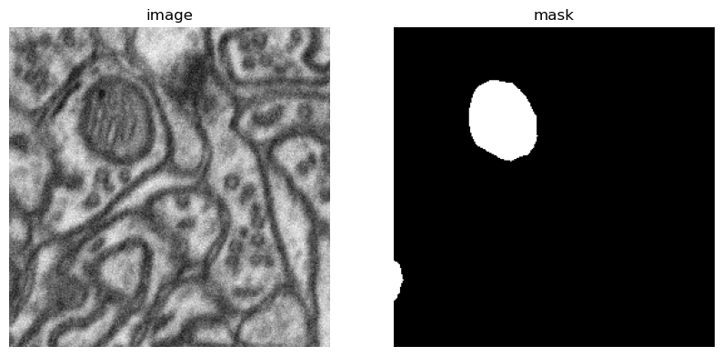
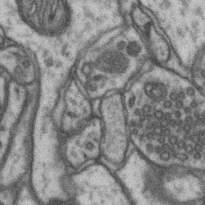

# Create pytorch dataset from hf datasetfirst download hugingface dataset and then convert it pytorch dataset with augmentation, to work further
IMAGE_HEGHT = 256
IMAGE_WIDTH = 256
IN_CHANNELS = 1
OUT_CHANNELS = 1show_hf_dataset
show_hf_dataset (dataset:datasets.arrow_dataset.Dataset, idx:Optional[int]=None, split:str='train')
Show hugging face random index
Now testing
show_hf_dataset(dataset) dataset index will be visualized: 106
#msk_no = len(dataset['train']['label'])
#mask_max =[np.max(np.array(dataset['train']['label'][i])) for i in range(msk_no)]def visualize_map(image, segmentation_map):
color_seg = np.zeros((segmentation_map.shape[0], segmentation_map.shape[1], 1), dtype=np.uint8) # height, width, 3
for label, color in id2color.items():
color_seg[segmentation_map == label, :] = colorSegmentationDataset
SegmentationDataset (dataset, transform)
An abstract class representing a :class:Dataset.
All datasets that represent a map from keys to data samples should subclass it. All subclasses should overwrite :meth:__getitem__, supporting fetching a data sample for a given key. Subclasses could also optionally overwrite :meth:__len__, which is expected to return the size of the dataset by many :class:~torch.utils.data.Sampler implementations and the default options of :class:~torch.utils.data.DataLoader. Subclasses could also optionally implement :meth:__getitems__, for speedup batched samples loading. This method accepts list of indices of samples of batch and returns list of samples.
.. note:: :class:~torch.utils.data.DataLoader by default constructs a index sampler that yields integral indices. To make it work with a map-style dataset with non-integral indices/keys, a custom sampler must be provided.
| Details | |
|---|---|
| dataset | |
| transform | Transformations |
MEAN =0
STD = 1
train_transform = A.Compose([
A.Resize(width=IMAGE_WIDTH, height=IMAGE_HEGHT),
A.HorizontalFlip(p=0.5),
A.Normalize(mean=MEAN, std=STD),
])
val_transform = A.Compose([
A.Resize(width=IMAGE_WIDTH, height=IMAGE_HEGHT),
A.Normalize(mean=MEAN, std=STD),
])#ds_test = load_dataset("EduardoPacheco/FoodSeg103")#msk=ds_test['train']['label'][0]#np.array(msk).shape#mskid2label = {0: 'background', 1: 'Pin'}pixel_values, target, original_image, original_segmentation_map = train_dataset[3]
print(pixel_values.shape)
print(target.shape)torch.Size([256, 256, 1])
torch.Size([1, 256, 256])
torch.Size([256, 256])def collate_fn(inputs):
batch = dict()
batch["pixel_values"] = torch.stack([i[0] for i in inputs], dim=0)
batch["labels"] = torch.stack([i[1] for i in inputs], dim=0)
batch["original_images"] = [i[2] for i in inputs]
batch["original_segmentation_maps"] = [i[3] for i in inputs]
return batchtrain_dataloader = DataLoader(train_dataset, batch_size=2, shuffle=True, collate_fn=collate_fn, num_workers=2)
val_dataloader = DataLoader(val_dataset, batch_size=2, shuffle=False, collate_fn=collate_fn, num_workers=2)batch = next(iter(train_dataloader))
for k,v in batch.items():
if isinstance(v,torch.Tensor):
print(k,v.shape)torch.Size([256, 256, 1])
torch.Size([256, 256, 1])
torch.Size([256, 256, 1])
torch.Size([256, 256, 1])
torch.Size([256, 256, 1])
torch.Size([256, 256, 1])
torch.Size([256, 256, 1])
torch.Size([256, 256, 1])
pixel_values torch.Size([2, 1, 256, 256])
labels torch.Size([2, 256, 256])batch["pixel_values"].dtype, batch["labels"].dtype(torch.float32, torch.int64)unnormalized_image = batch["pixel_values"][0].numpy() * np.array(STD)+ np.array(MEAN)
unnormalized_image = (unnormalized_image * 255).astype(np.uint8)
print(unnormalized_image.shape)
unnormalized_image = np.moveaxis(unnormalized_image, 0, -1)
print(unnormalized_image.shape)
unnormalized_image = Image.fromarray(unnormalized_image[:,:,0])
unnormalized_image(1, 256, 256)
(256, 256, 1)
UNetSmall
UNetSmall (in_channels, out_channels)
Base class for all neural network modules.
Your models should also subclass this class.
Modules can also contain other Modules, allowing to nest them in a tree structure. You can assign the submodules as regular attributes::
import torch.nn as nn
import torch.nn.functional as F
class Model(nn.Module):
def __init__(self):
super().__init__()
self.conv1 = nn.Conv2d(1, 20, 5)
self.conv2 = nn.Conv2d(20, 20, 5)
def forward(self, x):
x = F.relu(self.conv1(x))
return F.relu(self.conv2(x))Submodules assigned in this way will be registered, and will have their parameters converted too when you call :meth:to, etc.
.. note:: As per the example above, an __init__() call to the parent class must be made before assignment on the child.
:ivar training: Boolean represents whether this module is in training or evaluation mode. :vartype training: bool
TverskyFocalLoss
TverskyFocalLoss (alpha=0.7, beta=0.3, gamma=2.0, epsilon=1e-05)
Base class for all neural network modules.
Your models should also subclass this class.
Modules can also contain other Modules, allowing to nest them in a tree structure. You can assign the submodules as regular attributes::
import torch.nn as nn
import torch.nn.functional as F
class Model(nn.Module):
def __init__(self):
super().__init__()
self.conv1 = nn.Conv2d(1, 20, 5)
self.conv2 = nn.Conv2d(20, 20, 5)
def forward(self, x):
x = F.relu(self.conv1(x))
return F.relu(self.conv2(x))Submodules assigned in this way will be registered, and will have their parameters converted too when you call :meth:to, etc.
.. note:: As per the example above, an __init__() call to the parent class must be made before assignment on the child.
:ivar training: Boolean represents whether this module is in training or evaluation mode. :vartype training: bool
# creating dataset
train_dataset = SegmentationDataset(dataset["train"], transform=train_transform)
val_dataset = SegmentationDataset(dataset["test"], transform=val_transform)
# now dataloader
train_dataloader = DataLoader(train_dataset, batch_size=2, shuffle=True, collate_fn=collate_fn, num_workers=2)
val_dataloader = DataLoader(val_dataset, batch_size=2, shuffle=False, collate_fn=collate_fn, num_workers=2)def save_model(model, save_path):
Path(save_path).parent.mkdir(exist_ok=True, parents=True)
torch.save(model.state_dict(), save_path)train
train (train_dataloader:torch.utils.data.dataloader.DataLoader, val_dataloader:torch.utils.data.dataloader.DataLoader, optimizer:torch.optim.optimizer.Optimizer, model:torch.nn.modules.module.Module, criterion:torch.nn.modules.module.Module, device:torch.device, epochs:int, save_path:str)
if torch.cuda.is_available():
device = torch.device("cuda")
else:
device = torch.device("cpu")
print(f'Using device: {device}')Using device: cuda# creating dataset
train_dataset = SegmentationDataset(dataset["train"], transform=train_transform)
val_dataset = SegmentationDataset(dataset["test"], transform=val_transform)
# now dataloader
train_dataloader = DataLoader(train_dataset, batch_size=2, shuffle=True, collate_fn=collate_fn, num_workers=2)
val_dataloader = DataLoader(val_dataset, batch_size=2, shuffle=False, collate_fn=collate_fn, num_workers=2)model = UNetSmall(IN_CHANNELS, OUT_CHANNELS).to(device)
criterion = TverskyFocalLoss(alpha=0.7, beta=0.3, gamma=2.0)
optimizer = torch.optim.AdamW(model.parameters(), lr=0.001, weight_decay=0.0001)for name, param in model.named_parameters():
print(name)encoder.0.weight
encoder.0.bias
encoder.2.weight
encoder.2.bias
middle.0.weight
middle.0.bias
decoder.0.weight
decoder.0.bias
decoder.2.weight
decoder.2.bias
decoder.4.weight
decoder.4.biasbatch = next(iter(train_dataloader))batch['labels'].shapetorch.Size([2, 1, 256, 256])logits=model(batch['pixel_values'].to(device))
logits.shape
criterion(logits, batch['labels'].to(device))tensor(0.9611, device='cuda:0', grad_fn=<MeanBackward0>)train(
train_dataloader=train_dataloader,
val_dataloader=val_dataloader,
optimizer=optimizer,
criterion=criterion,
model=model,
device=device,
epochs=1,
save_path='model.pth'
)epoch: 1/1
Epoch [1/1], Loss: 0.0003, Learning Rate: 0.00001000
Epoch [1/1], Loss: 0.0003, Val Loss: 0.0003def load_model(model, checkpoint_path):
model.load_state_dict(torch.load(checkpoint_path))
model.eval() # Set the model to evaluation mode
return modelcheckpoint_path = 'model.pth'loaded_model = load_model(UNetSmall(IN_CHANNELS, OUT_CHANNELS), checkpoint_path)
loaded_model = loaded_model.to(device)inf_img = val_transform(image=np.array(dataset['test']['image'][0]))
inf_img['image'].shape(256, 256)new_img=(inf_img['image'])inp_img_infr = np.expand_dims(np.expand_dims(new_img,axis=-1),0).shapeloaded_model(torch.tensor(np.expand_dims(np.expand_dims(new_img,axis=-1),0)).to(device))RuntimeError: Given groups=1, weight of size [16, 1, 3, 3], expected input[1, 256, 256, 1] to have 1 channels, but got 256 channels insteadinp_img_infr=inp_img_infr.to(device)AttributeError: 'tuple' object has no attribute 'to'